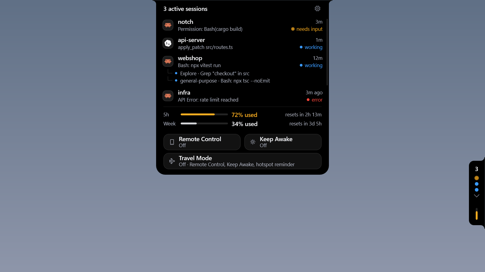
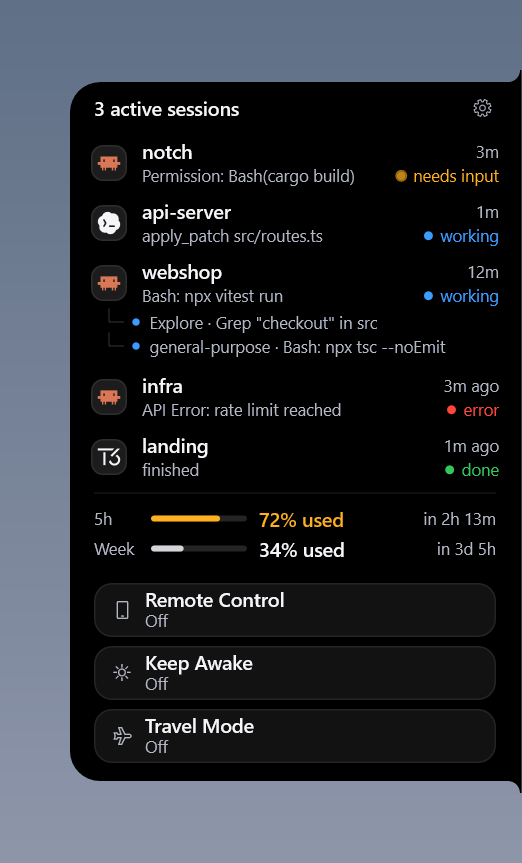

Notch is a tiny Mac-style notch for Windows. It sits on the edge of your screen and shows which Claude Code, Codex and T3 Code sessions are working, which are waiting on you, and which are done.

Rendered by Notch itself from demo data.
Hover to open it, move away and it closes. It only speaks up when a session needs you.
Every open Claude Code session with its real title, current step and elapsed time. Codex and T3 Code too.
Each subagent running inside a session is listed under it, with what it is doing right now.
Answer a permission request from the notch or straight from the toast, without switching windows.
Click a row to open exactly that session in the Claude desktop app, or raise its terminal.
Your 5-hour and weekly Claude usage as percentages, with the time until each resets.
Start or stop Claude Code Remote Control in one click, to carry on from your phone.
Close the lid and keep working on an external monitor. It stays on until you switch it off.
Keep Awake, Remote Control and a full-screen hotspot reminder, together.
Drag it to any point on the top, bottom, left or right edge of any monitor, or let it float.
On the left or right it becomes a slim vertical tab that opens into a narrower, taller panel with a scrolling list. On the bottom it sits on top of the taskbar and opens upward. A hotkey hides it, and it gets out of the way of fullscreen apps.

Windows 10 or 11, 64-bit. No administrator rights needed.
Double-click it if you just want to try it.
In a terminal: notch.exe --install. This puts it in your user Programs folder, adds Desktop and Start Menu shortcuts, and starts it.
It asks on first start. Your existing hooks are left untouched, a backup is saved first, and uninstalling restores the file exactly.
The exe is not code-signed, so Windows SmartScreen may warn the first time: choose "More info", then "Run anyway". Prefer not to trust a download? Build it from source.
There is no macOS version. Notch is written against the Windows graphics and window APIs.
Native Rust and Direct2D. No web view, no GPU device, and it draws only when something changes.
| Case | CPU average | CPU peak | Memory |
|---|---|---|---|
| Idle, no sessions | 0.002% | 0.13% | 24 MB |
| 5 sessions, 3 dots pulsing, collapsed | 0.22% | 0.78% | 12 MB after trim |
| 5 sessions, 3 dots pulsing, open | 0.38% | 0.95% | 13 MB after trim |
| 5 sessions, about 80 events a second | 1.85% | 4.23% | 41 MB peak |
Measured on Windows 11, 12 logical cores, 150% scaling. CPU is the share of the whole machine. The idle row was measured on an early build. What is and is not verified.